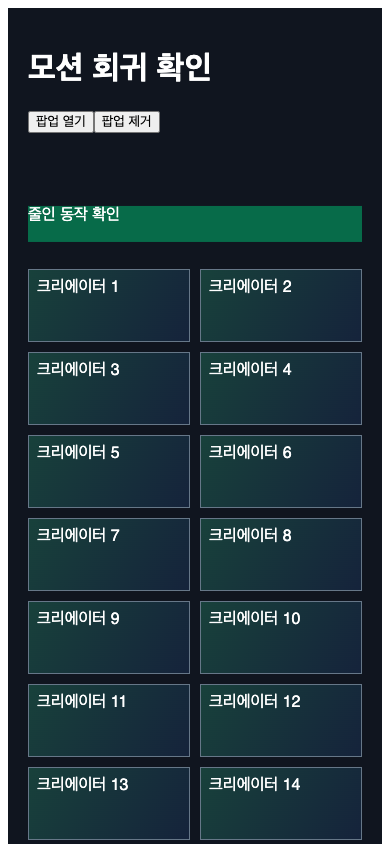
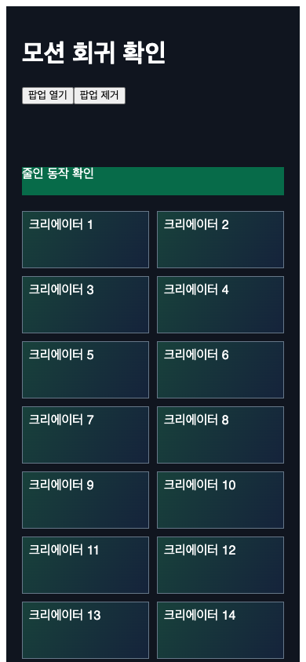
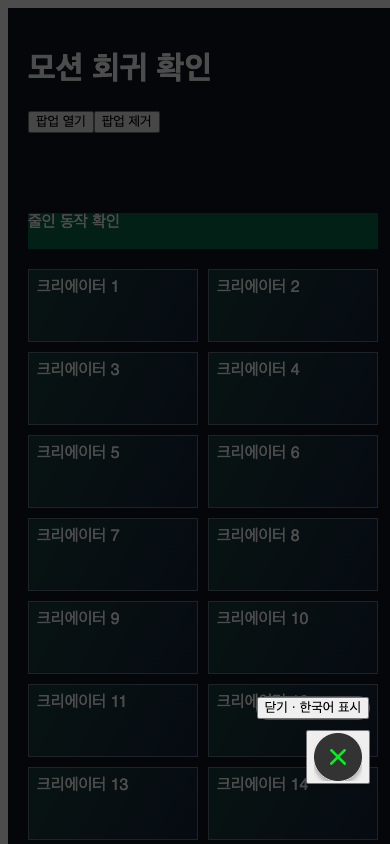

C8 모션 최적화
검증 요약
수리안의 타입 검사와 번들 빌드, 변경 파일 린트는 통과했습니다. 줄인 동작과 팝업 복구는 가상 데이터 화면에서 확인했습니다. 영상 출고 시험은 높은 기계 부하로 보류했습니다.
확인한 범위
- 수리안 검사
- 타입 검사·번들 빌드·변경 파일 린트: 통과. 전체 린트에는 기준 코드부터 있던 오류 50건이 남았고, 오류 대조에서 신규 오류는 없었습니다.
- 줄인 동작
- 설정을 끄면 중간 이동 프레임이 있었고, 켜면 중간 이동 없이 최종 위치와 한국어 내용을 유지했습니다.
- 팝업 복구
- 퇴장 후 화면에서 제거되고, 반복 열기·닫기 뒤 스크롤 잠금이 풀렸습니다. 퇴장 중 다시 열어도 클릭이 복구됐습니다.
- 레이어 비교
- 가상 카드 40개를 반복한 격리 화면에서 45개 → 5개. CPU 4배 스로틀 조건입니다. 이 수치는 격리 화면에 한정됩니다.
- 자막 폰트
- 자막용 폰트: 약 17MB → 9KB. 자막에 쓰는 글자만 남겼고 누락 글리프는 없었습니다. 새 영상의 화면 검증을 대신하는 결과는 아닙니다.
가상 데이터 시험 화면
아래 화면은 가상 카드와 한국어 시험 문구로 만든 검증용 화면입니다. 실제 이용자 정보와 운영 데이터가 포함된 화면이 아닙니다.




정지 화면은 최종 내용 보존을 보여 줍니다. 중간 이동 제거는 별도 프레임 관찰로 확인했습니다. 이미지를 누르면 원본 크기로 열립니다.



아직 끝나지 않은 검증
미리보기·출고용 MP4는 높은 부하로 렌더하지 않았습니다. 두 영상의 규격, 렌더 시간·파일 크기 비교, 한국어 프레임 확인이 남았습니다.
실제 앱 WebView의 동작과 성능은 미검증입니다. 측정 당시 기계 부하와 측정 시각이 달라 FPS 차이를 속도 개선 근거로 쓰지 않았습니다.
애니메이션 라이브러리 업그레이드 시험은 타입 검사에서 실패해 이번 수리안에 포함하지 않았습니다. 앱 코드의 원격 발행·머지·배포: 미실행.